10 部片单 · 悬疑 / 惊悚 / 恐怖 / 科幻 / 剧情
| # | 片名 | 类型 | 评分 / 状态 |
|---|---|---|---|
| 01 | 十二宫 | 悬疑 / 惊悚（美国 · 一桩至今没破的案） | 7.5 / 90% / 79 |
| 02 | 盗梦空间 | 科幻 / 悬疑（美国 · 一场四层深的梦） | 9.4 / 87% / 74 |
| 03 | 黑天鹅 | 惊悚 / 剧情（美国 · 一只白天鹅的崩坏） | 8.6 / 85% / 79 |
| 04 | 招魂 | 恐怖（美国 · 一栋房子和一对驱魔人） | 7.9 / 86% / 68 |
| 05 | 心迷宫 | 悬疑 / 剧情（中国大陆 · 一口棺材换三家人） | 8.7 / 7.7 |
| 06 | 火星救援 | 科幻（美国 / 英国 · 一个人在火星种土豆） | 8.5 / 91% / 80 |
| 07 | 大佛普拉斯 | 剧情 / 悬疑（中国台湾 · 行车记录仪里的另一种人生） | 8.7 / 90% / 7.6 |
| 08 | 灯塔 | 恐怖 / 惊悚（美国 / 加拿大 · 两个守灯人和一座岛） | 7.3 / 90% / 83 |
| 09 | 哥斯拉-1.0 | 科幻 / 灾难（日本 · 从零到负一） | 6.6 / 99% / 81 |
| 10 | 宇宙探索编辑部 | 科幻 / 剧情（中国大陆 · 一个主编的西南公路） | 8.0 / 7.6 |
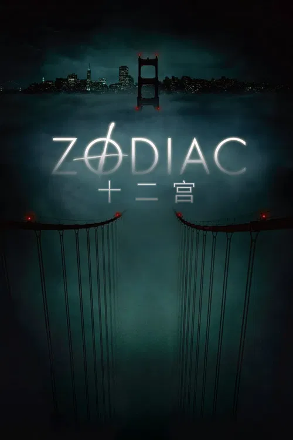
十二宫 Zodiac
「我不相信没有答案，我只是还没找到。」
剧情梗概
1960 年代末的旧金山出现一个自称「十二宫」的连环杀手，杀人之后给报社寄密码信挑衅。《旧金山纪事报》的漫画家罗伯特·格雷史密斯与记者保罗·艾弗里开始追这条线，警探大卫·托斯奇也被卷了进来。十年过去，案子还是没破，人却先老了。
亮点
- 改编自罗伯特·格雷史密斯的纪实作品；真实案件至今未破，芬奇为此做了近一年半的案卷与走访。
- 全片 157 分钟，没有追车、没有枪战，主要动作是打电话、查档案、比对笔迹。
- 较早全流程使用数字中间片拍摄的芬奇作品，雨夜与地下室的处理冷到发蓝。
- 小罗伯特·唐尼演一个逐渐垮掉的记者，这是他「钢铁侠」之前最被低估的一次表演。
- 影片结尾不给凶手，只给一个嫌疑人的名字和一段目击证词——这是它最被争议、也最诚实的地方。
- 烂番茄 90% / Metacritic 79，是芬奇作品里「影评人与观众分歧最大」的一部之一。
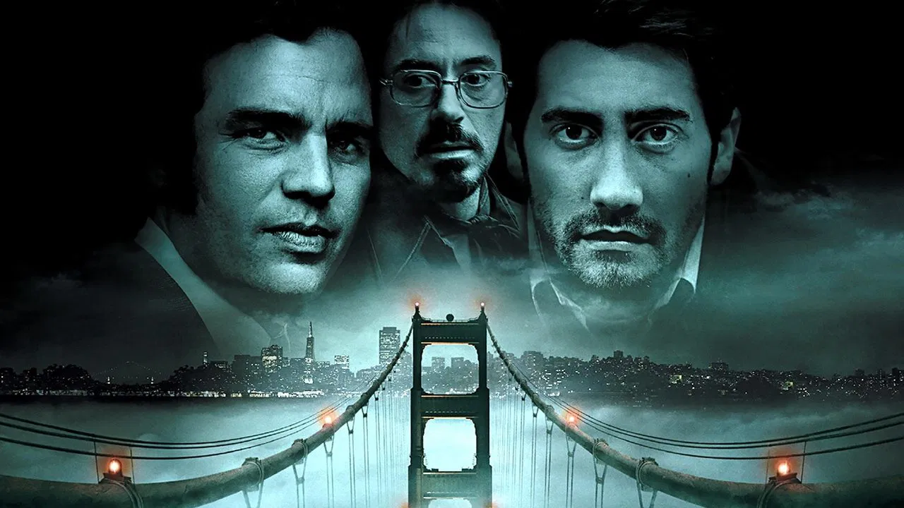
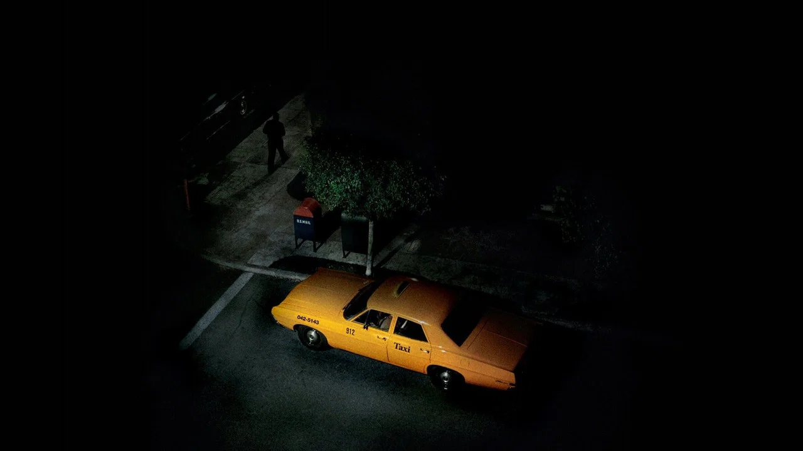
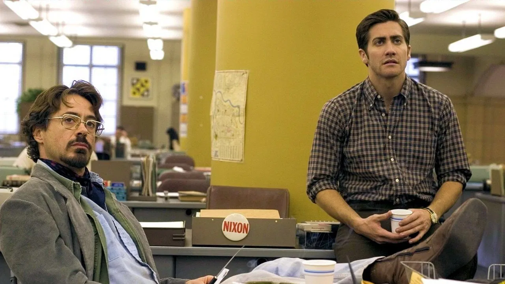
导演与主创 · 他们的历史作品

 搏击俱乐部
搏击俱乐部 七宗罪
七宗罪 消失的爱人
消失的爱人 本杰明·巴顿奇事
本杰明·巴顿奇事
 死亡幻觉
死亡幻觉 夜行者
夜行者 源代码
源代码 蜘蛛侠：英雄远征
蜘蛛侠：英雄远征
 复仇者联盟
复仇者联盟 复仇者联盟3：无限战争
复仇者联盟3：无限战争 钢铁侠
钢铁侠 复仇者联盟4：终局之战
复仇者联盟4：终局之战短评（轻微剧透）
《十二宫》最反套路的地方是它拒绝给你一个结局。轻微剧透：真正的转折不在案子，在人。格雷史密斯从一个凑热闹的漫画家，一点点变成比警察还熟卷宗的调查者，代价是丢了工作、散了家；等他终于在地下档案室里说出一个名字，镜头却什么都没替他证明。芬奇拍的不是「追凶」，是「追的过程怎么把人换掉」——托斯奇升了职又降了职，艾弗里喝到进戒毒所，格雷史密斯赢了推理、输掉了生活。它常被批评太长、太闷、太没有高潮，但这三点恰恰是它的主题：真实世界里，一桩案子不会在两小时内被解决，它只是慢慢凉下去，而追它的人还在原地。
为什么值得一看
喜欢《杀人回忆》那种「追不下去的案子」的人；能接受两个半小时慢节奏、没有最终反转的观众。含凶案现场与血腥照片镜头，压迫感中等，无大尺度画面。内地未映，流媒体可看。
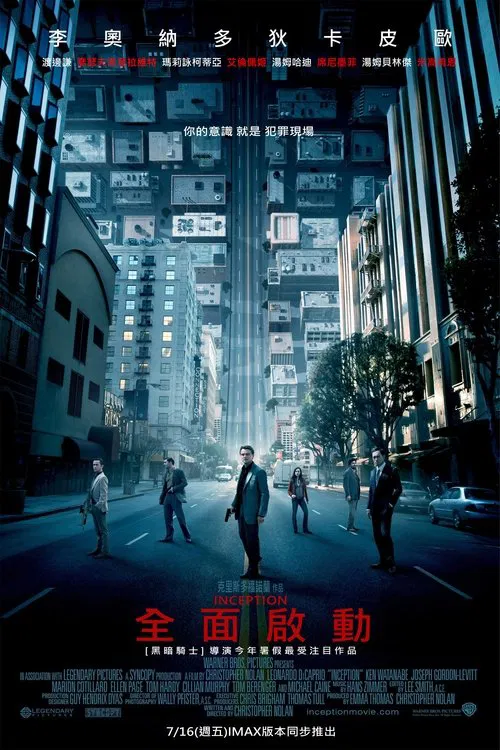
盗梦空间 Inception
「你在等一班火车，它会带你去很远的地方。」
剧情梗概
造梦师柯布带着团队做一件事：不是偷东西，而是把一个想法种进目标人物的脑子里。为了完成它，他们要潜入四层梦境，每一层的时间流速都不同。而柯布自己带着一个不该被带进梦里的人——他死去的妻子梅尔。
亮点
- 第 83 届奥斯卡八项提名、四项获奖：最佳摄影、最佳视觉效果、最佳音效剪辑、最佳混音。
- 诺兰筹备近十年；汉斯·季默的配乐把《Non, je ne regrette rien》放慢成主题动机——那是梅尔的声音。
- 巴黎街景折叠、走廊失重打斗两场戏大量使用实景与机械装置，绿幕比想象中少得多。
- 「图腾」（陀螺）最后到底停没停，是近二十年最著名的开放式结局之一。
- 内地 2010-09-01 公映，是诺兰第一部同步引进内地的作品；豆瓣 9.4 长年在 TOP250 前十。
- 影评界（Metacritic 74）比观众（豆瓣 9.4 / IMDb 8.8）克制得多，主要批评是「解释太多、情感太少」。
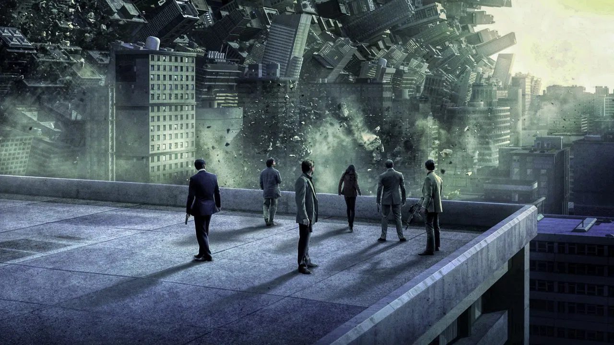
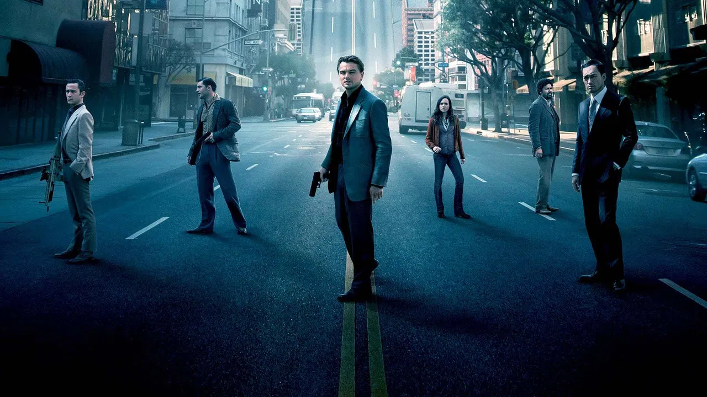
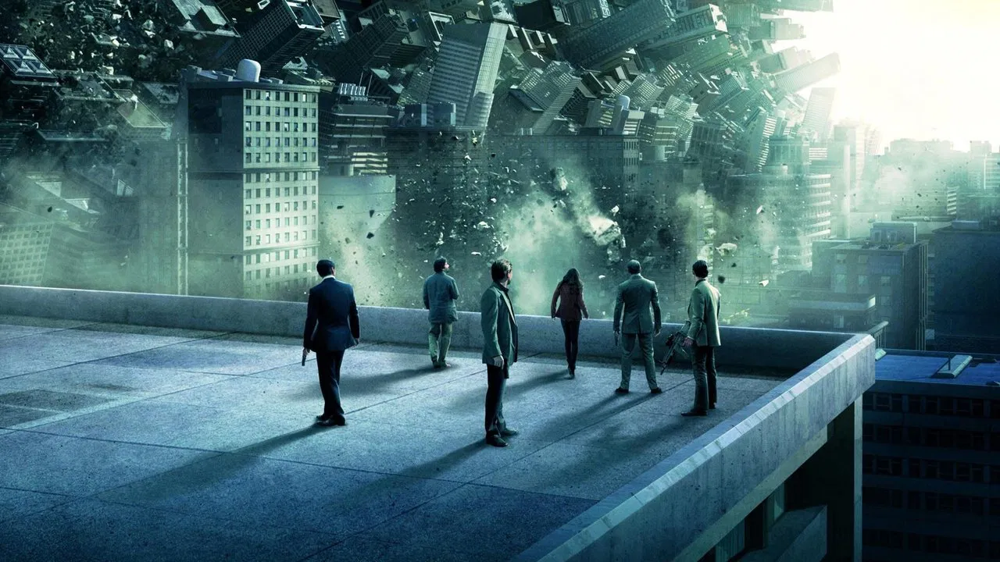
导演与主创 · 他们的历史作品

 星际穿越
星际穿越 蝙蝠侠：黑暗骑士
蝙蝠侠：黑暗骑士 蝙蝠侠：黑暗骑士崛起
蝙蝠侠：黑暗骑士崛起 蝙蝠侠：侠影之谜
蝙蝠侠：侠影之谜
 泰坦尼克号
泰坦尼克号 华尔街之狼
华尔街之狼 禁闭岛
禁闭岛 荒野猎人
荒野猎人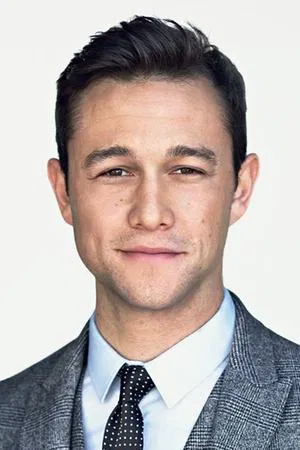
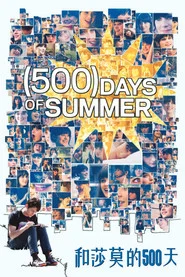
和莎莫的500天 环形使者蝙蝠侠：黑暗骑士崛起
环形使者蝙蝠侠：黑暗骑士崛起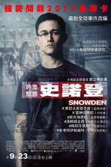
斯诺登短评（轻微剧透）
《盗梦空间》真正讲的不是梦，是负罪感。柯布每次入梦，梅尔都会出现——不是她想杀他，是他不敢让她消失。轻微剧透：真正的转折在第四层。他终于说出「是我把怀疑种进了她脑子里」，这一句把整部片从科幻翻成了伦理：他偷了一辈子的东西，最后偷走的是妻子对现实的判断。影片的结尾在陀螺还在转的时候切走了，诺兰很聪明——他让观众自己决定柯布要不要留下来，可答案其实早写在那句台词里：他已经不想再看清那张脸了。这部片批評它「冷」的人说得没错，它确实把情感压在结构下面，但当你第二遍看的时候会发现，所有关于「时间」的设计，都只是为了多给梅尔几秒钟。
为什么值得一看
想看近二十年结构最完整的商业科幻的人；喜欢《星际穿越》《记忆碎片》这类「需要看两遍」的观众。含枪战与动作场面，无血腥；概念密集，第一次看建议集中注意力。内地公映过，流媒体可看。
黑天鹅 Black Swan
「我只想要完美。」
剧情梗概
纽约一家芭蕾舞团要重排《天鹅湖》，要求领舞一人分饰白天鹅与黑天鹅。技术无懈可击的妮娜拿到了角色，可她演不出黑天鹅的欲望与危险。随着首演临近，她的身体开始出现异常：背上的抓痕、脚趾的裂口，以及镜子里那个不跟着她动的自己。
亮点
- 娜塔莉·波特曼凭此片拿下第 83 届奥斯卡影后；她为此训练一年多，片中大量舞蹈由她本人完成。
- 阿罗诺夫斯基把《天鹅湖》的人物关系和妮娜的处境一一对应：母亲、总监、莉莉分别对应王后、魔王与黑天鹅。
- 全片用 16mm 手持摄影贴着波特曼拍，观众从头到尾被关在她的视角里，几乎没有喘息镜头。
- 文森特·卡塞尔演的总监把「解放天性」当成控制手段——这条线近十年被反复重新解读。
- 成本约 1300 万美元，全球票房 3.3 亿美元，是当年最赚钱的艺术向惊悚片。
- 豆瓣 8.6 / 烂番茄 85%，观众评价明显高于影评界（Metacritic 79），分歧主要在「心理惊悚还是夸张过火」。
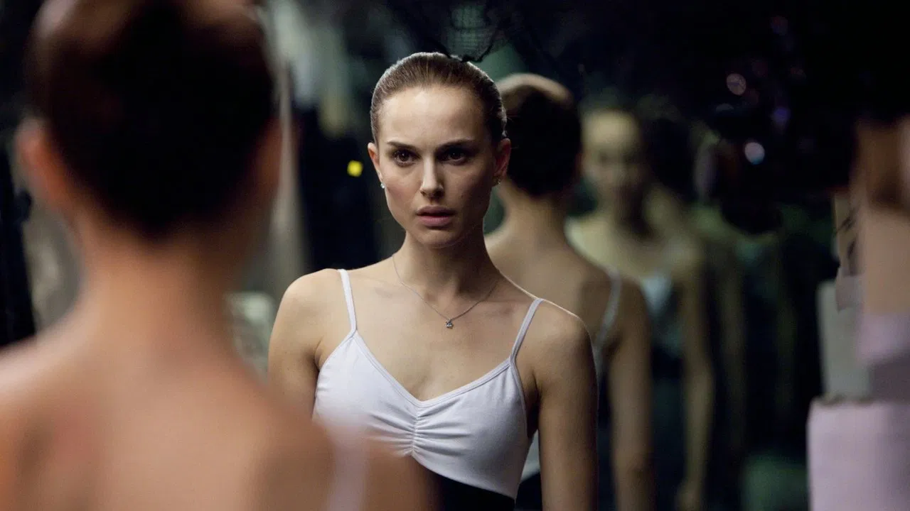
导演与主创 · 他们的历史作品

 梦之安魂曲
梦之安魂曲 母亲！
母亲！ 诺亚方舟：创世之旅
诺亚方舟：创世之旅 鲸
鲸
 V字仇杀队
V字仇杀队 雷神
雷神 湮灭
湮灭 雷神2：黑暗世界
雷神2：黑暗世界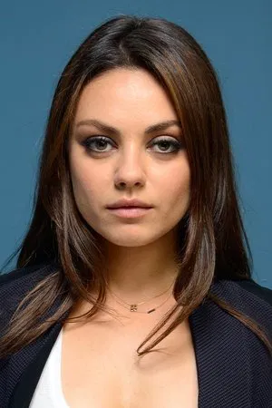
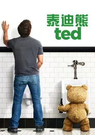
泰迪熊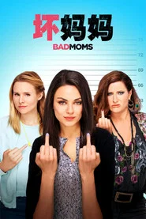
坏妈妈 木星上行
木星上行短评（轻微剧透）
轻微剧透：真正的转折在化妆间。妮娜把碎玻璃捅进了「莉莉」的身体，然后发现那具身体是自己的。阿罗诺夫斯基从头到尾没告诉你哪一段是真的——拔倒刺、镜子里的自己、背上冒出的羽毛，全都可能是妮娜的幻觉。他真正厉害的地方在于：这不是一个「她疯了」的故事，而是一个「她必须疯掉才演得好」的故事。白天鹅要求完美，黑天鹅要求失控，一个从小被母亲培养成乖女儿的人，只能通过伤害自己来够到后者。最后那句「I felt it. Perfect. It was perfect.」是全片最冷的一句——她做到了，而代价是她自己。
为什么值得一看
想看近年最好的「表演驱动型」心理惊悚的人；喜欢《梦之安魂曲》《夜行动物》《塔尔》这类压迫感影片的观众。含自残、性暗示与幻觉惊吓场面，心理压迫感强。内地未映，流媒体可看。
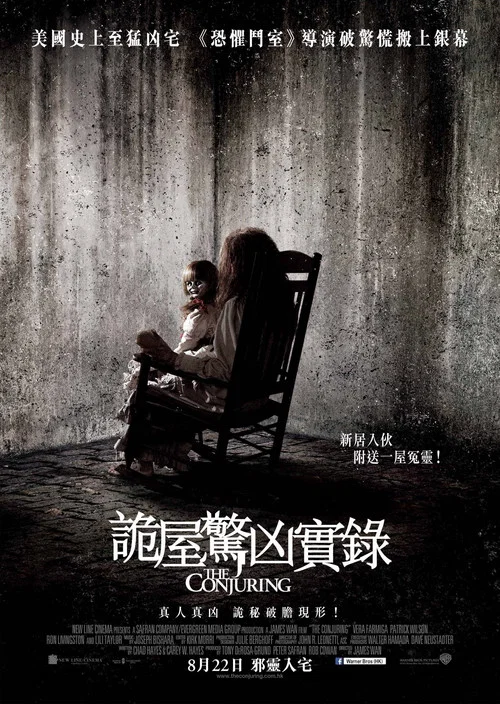
招魂 The Conjuring
「它想要我的孩子。」
剧情梗概
1971 年，佩伦一家搬进罗德岛一栋旧农舍。先是狗死在院子里，接着是母亲身上的淤青、夜里被关进地下室的女儿，以及一个怎么也停不下来的钟。他们请来了超自然调查者埃德与洛琳·沃伦——两个真的以此为生的人。
亮点
- 温子仁执导，成本约 2000 万美元，全球票房 3.2 亿美元，催生了后来的「招魂宇宙」。
- 故事来自沃伦夫妇的真实档案；片尾字幕写明案件编号与当事人结局，洛琳本人参与了前期工作。
- 全片几乎没有血浆，靠长镜头、慢推和声音设计取胜——地下室拍手那场戏没有一个特效镜头。
- 维拉·法米加与帕特里克·威尔逊的搭档是整套系列的地基，两人此后合作了四部以上。
- 结尾被收进「器物室」的那只音乐盒，真实存在于沃伦家的博物馆里。
- 烂番茄 86% / Metacritic 68：观众把它当近年最好的鬼屋片，影评界认为它「手法老派但极其有效」。
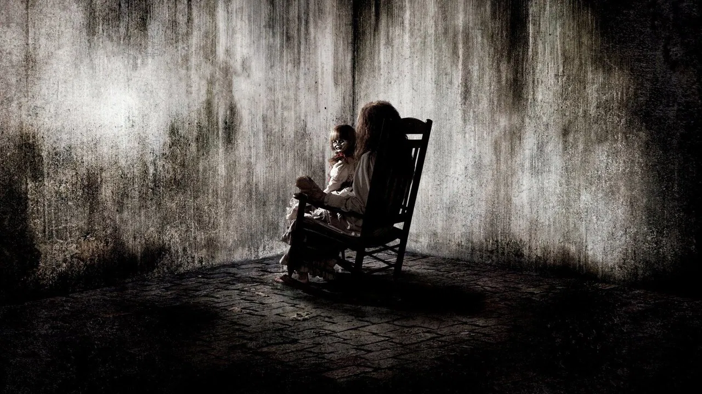
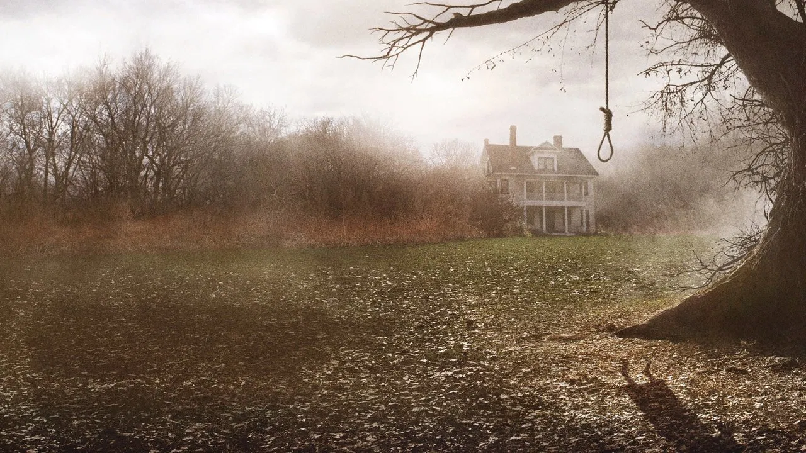
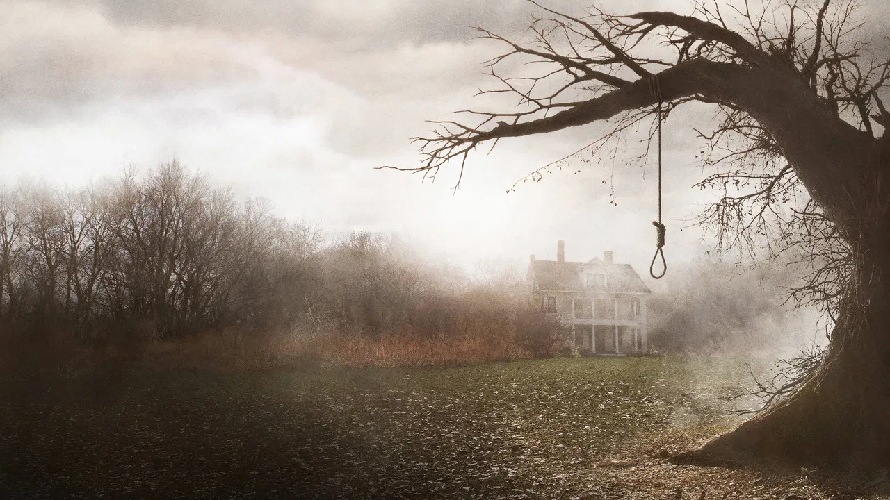
导演与主创 · 他们的历史作品

 海王
海王 速度与激情7
速度与激情7 电锯惊魂
电锯惊魂 招魂2招魂2
招魂2招魂2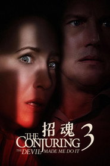
招魂3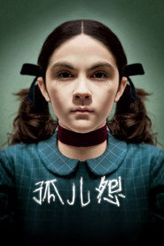
孤儿怨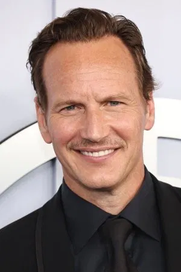
 潜伏
潜伏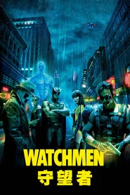
守望者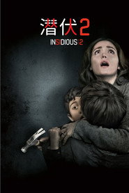
潜伏2招魂2短评（轻微剧透）
轻微剧透：真正的转折在洛琳。整部片里最让人不安的不是鬼，是她——一个能看见东西、却必须装作只是来「看看」的女人。她每次进门先闻味道、先看孩子的房间，那一套动作比任何驱魔仪式都真实。温子仁很清楚自己在做什么：他不解释恶从哪来，只让它一点点挤进这栋房子——先是一只鸟撞死在窗上，再是钟停在 3:07，最后才是附身。它最聪明的一点是：这一家人从头到尾没做错任何事，他们只是买不起别的房子。恐怖片拍到这个份上，吓人已经不是目的了。
为什么值得一看
想看近十年最扎实的鬼屋题材的人；喜欢《潜伏》《寂静之地》这类靠氛围而非血浆的观众。含附身、惊吓跳吓与儿童受威胁场面，无血腥，情绪紧张。内地未映，流媒体可看。
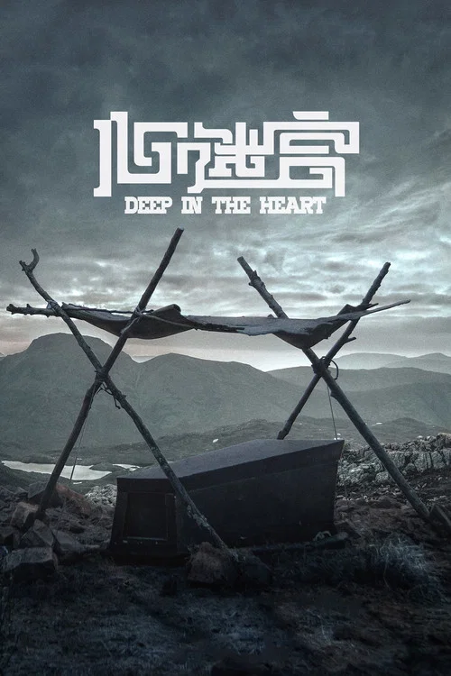
心迷宫 The Coffin in the Mountain
「做事要对得起良心。」
剧情梗概
河南一个山村，清晨突然多出一具烧焦的尸体。村里同时失踪了少女黄欢、外出打工的瘸子陈自立，以及欠了一屁股赌债的白虎。于是这口棺材在六天里被三户人家认领、退回、再借走——每一次转手，都有人松一口气，也都有人开始心虚。
亮点
- 忻钰坤长片处女作，成本约 170 万元，全部使用河南本地非职业演员。
- 2014 年拿下第 8 届 FIRST 青年影展最佳剧情长片，并入围第 71 届威尼斯影评人周。
- 全片用环形叙事，同一件事从三个人的视角各讲一遍，每次补上一块拼图。
- 豆瓣 8.7，长年在「国产悬疑天花板」与「2015 年国产片评分第一」的讨论里被提起。
- 原名《殡棺》，改名为《心迷宫》有向科恩兄弟《血迷宫》致敬的意思。
- 结尾父子隔着一口棺材对视、没有一句台词的那场戏，是全片被引用最多的镜头。
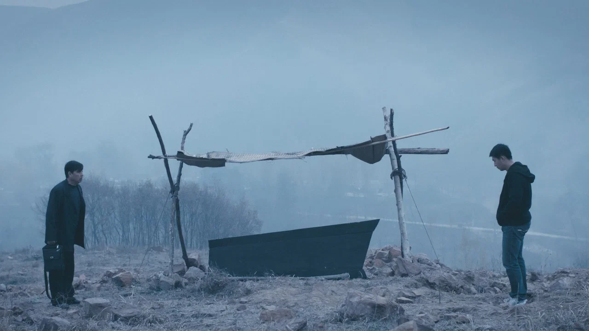
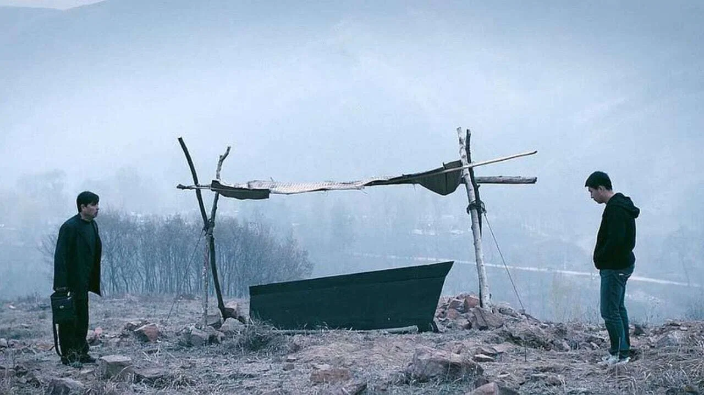
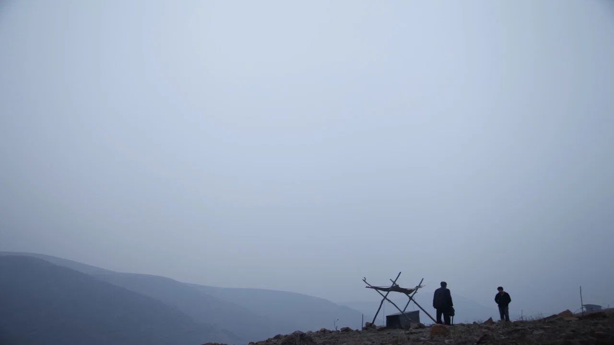
导演与主创 · 他们的历史作品

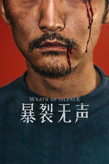
暴裂无声 再见，在也不见
再见，在也不见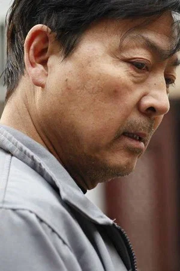
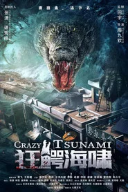
狂鳄海啸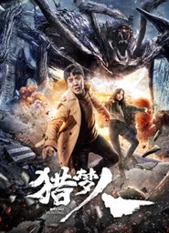
猎梦人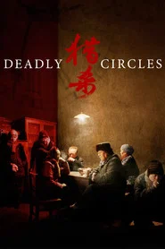
猎杀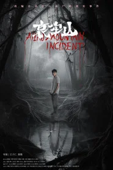
哀牢山短评（轻微剧透）
轻微剧透：真正的转折不是「凶手是谁」——答案在第二十分钟就给了。这部片真正玩的是「谁以为自己杀了人」。村长替儿子烧尸、埋尸、刨尸，把同一具尸体在村里转了三手；大壮举起铁棍又放下，结果被所有人记成了恩人；丽琴把金手镯递回去时说的是谢谢。每个人都在为自己那点私心撒一个很小的谎，然后这些谎自动咬合成了一个谁也拆不开的结。它最好笑也最冷的地方是：全村没有一个人是坏人，也没有一个人清白。六天里死了两个人，而村长一辈子挂在嘴边的那句「做事要对得起良心」，最后成了这部片最锋利的一句反话。
为什么值得一看
想看国产小成本悬疑能做到什么程度的人；喜欢《暴裂无声》《杀人回忆》这类乡土/犯罪题材的观众。含尸体、家暴与死亡场面，无血腥特写；方言对白，节奏偏慢。流媒体可看。
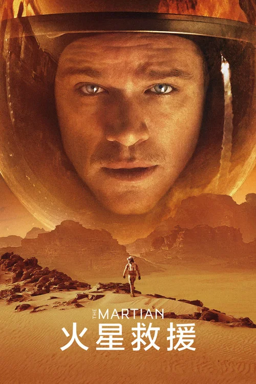
火星救援 The Martian
「我要用科学干出一条生路来。」
剧情梗概
阿瑞斯 3 号任务遭遇巨型风暴提前撤离，植物学家马克·沃特尼被吹飞的天线击中，队友以为他已经死了。醒来后他发现自己一个人被留在火星，补给只够一个月，下一次任务要四年之后。他开始算：用粪便做肥料种土豆，用火箭燃料制水，以及想办法让地球知道他还活着。
亮点
- 雷德利·斯科特执导，改编自安迪·威尔的同名小说——最初是作者自费连载的网络小说。
- 第 88 届奥斯卡七项提名，包括最佳影片与最佳改编剧本；金球奖拿下音乐/喜剧类最佳影片与最佳男主。
- NASA 全程担任顾问，片中大量设定（同位素电池取暖、离子推进器）都有现实依据。
- 杰西卡·查斯坦演的指挥官刘易斯，是「地球一侧」的道德锚点。
- 内地 2015-11-25 公映，票房约 5.9 亿人民币，豆瓣 8.5。
- 烂番茄 91% / Metacritic 80——影评界普遍认为它「技术过硬但过于乐观」，观众几乎没有意见。
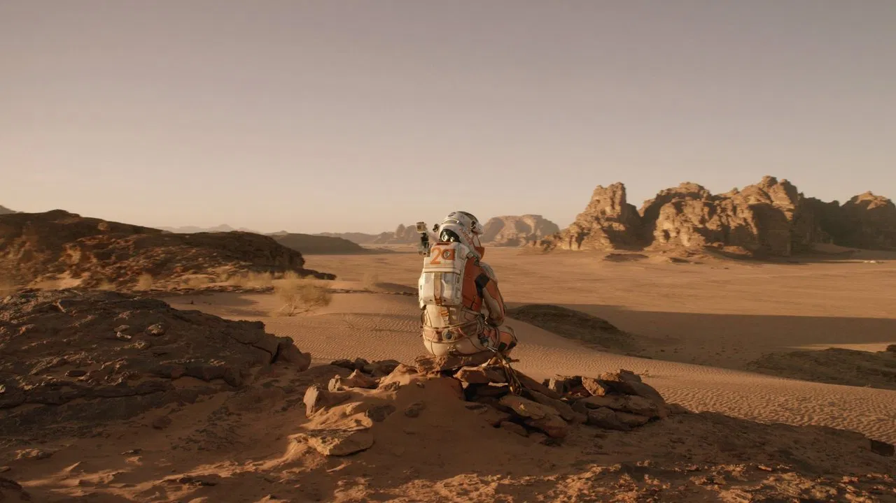
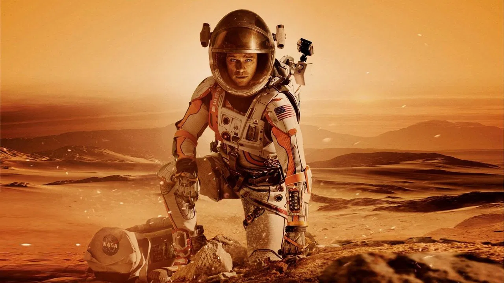
导演与主创 · 他们的历史作品

 角斗士
角斗士 异形
异形 银翼杀手
银翼杀手 普罗米修斯
普罗米修斯
 心灵捕手
心灵捕手 谍影重重
谍影重重 极乐空间
极乐空间 极速车王星际穿越
极速车王星际穿越 小丑回魂2
小丑回魂2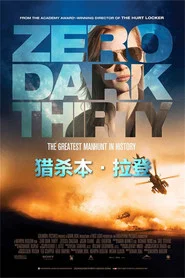
猎杀本·拉登 妈妈
妈妈短评（轻微剧透）
轻微剧透：真正的转折不在火星，在地球。全片最动人的一场戏是一屋子 NASA 高管在投票——救一个人要花多少钱、值不值、要不要告诉队员真相。沃特尼这边一直在说「我解决一个问题，再解决下一个」，而地球那边在算账。斯科特很聪明地把这两件事剪在一起：一个人靠常识活下来，一群人靠协作把他接回来。它常被说「太顺了」，可这份顺正是它的主题——在一个没人跟你说话的地方，唯一能做的就是把大问题拆成小问题，然后一个一个解决掉。
为什么值得一看
想看近十年最不费力的硬科幻的人；喜欢《星际穿越》《地心引力》这类太空题材、但不想要沉重结局的观众。无血腥与暴力，含少量粗口，基调乐观。内地公映过，流媒体可看。
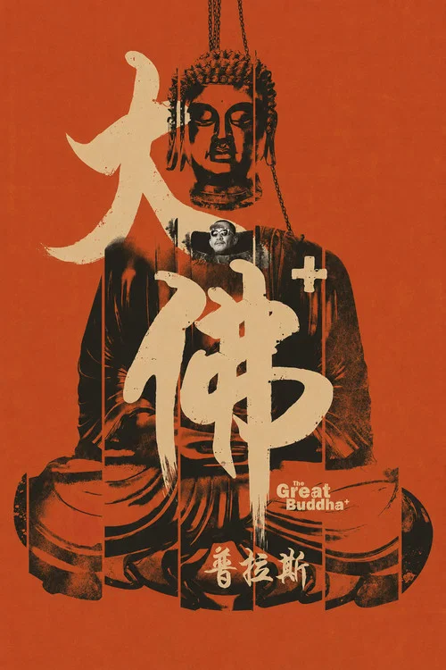
大佛普拉斯 The Great Buddha+
「有来有去，人生就是这样。」
剧情梗概
菜埔是佛像工厂的夜班保安，肚财是收破烂的。两个人夜晚唯一的娱乐，是偷看老板黄启文的行车记录仪——那是他们唯一能看到「有钱人怎么活」的窗口。直到某天夜里，画面里出现了一具尸体。
亮点
- 黄信尧从纪录片转剧情片的第一部长片；此前的短片《大佛》已经拿下金马奖。
- 第 54 届金马奖五项获奖，包括最佳改编剧本、最佳新导演与最佳摄影。
- 全片主体黑白，只有行车记录仪里的画面是彩色的——这个设定本身就是它的阶层隐喻。
- 导演本人担任旁白，时不时跳出来吐槽角色与剧情，是 2010 年代最特别的叙事设计之一。
- 台语、客语、国语混用，配乐由林生祥创作。
- 豆瓣 8.7 / 烂番茄 90%，海外媒体称它是「台客大叔版的贾木许加希区柯克」。
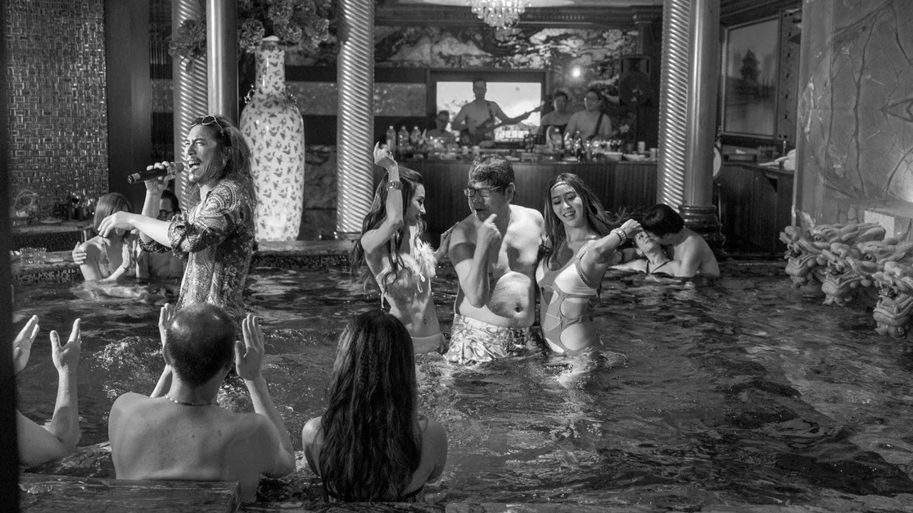
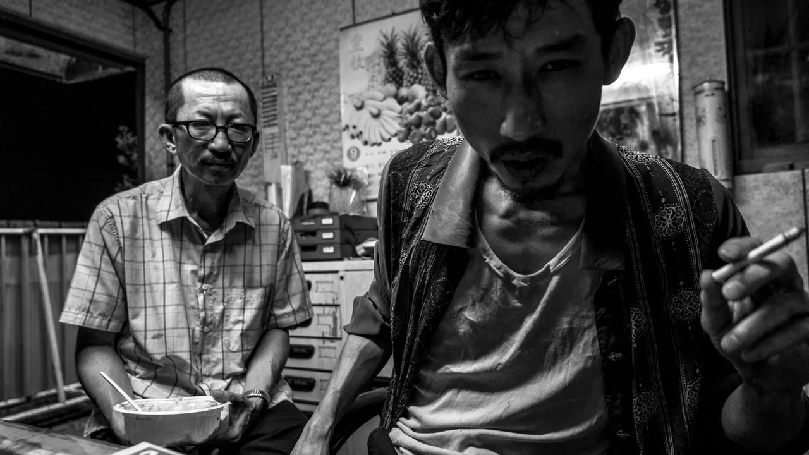
导演与主创 · 他们的历史作品
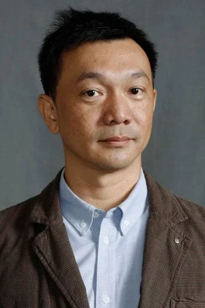
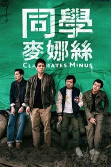
同学麦娜丝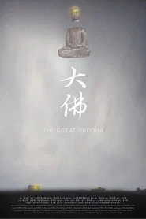
大佛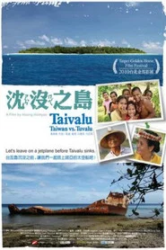
沉没之岛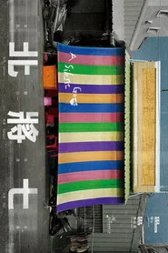
北將七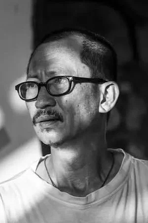
 一路顺风
一路顺风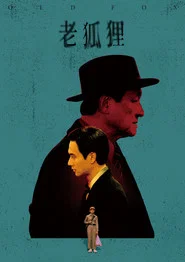
老狐狸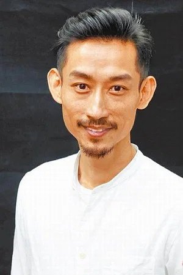
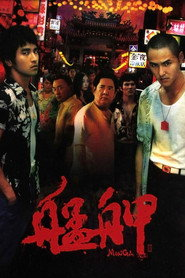
艋舺 嘉年华
嘉年华短评（轻微剧透）
轻微剧透：真正的转折在最后那场法会。所有人都以为那件事会被压下去，结果大佛肚子里传出的声音在几万人面前响了起来——这一下把「底层偷看上层」的黑色喜剧直接顶成了寓言。黄信尧最狠的地方是他不愤怒：他只是让两个连饭都吃不饱的人，对着一段行车记录仪羡慕人家「至少还有人陪他睡觉」。他们偷看到的从来不是真相，是另一种生活；等真相真的出现，反而是他们自己先被吓住。全片最安静的一句是那句旁白：「对他们来说，只要能顺利过完这辈子就很不容易了。」
为什么值得一看
想看中文电影里少见的「荒诞 + 悲悯」气质的人；喜欢《一路顺风》《同学麦娜丝》这类台湾黑色喜剧的观众。含命案画面与大量粗口，尺度不小；黑白摄影，节奏舒缓。内地未映，流媒体可看。
灯塔 The Lighthouse
「为什么你要看我的灯？」
剧情梗概
1890 年代，年轻的前伐木工温斯洛来到新英格兰外海的一座孤岛，与老守灯人托马斯·韦克一起值班四周。补给船没来，风暴不断；等酒也喝光之后，两个人开始分不清谁在说谎、谁在服从，以及灯塔顶上那个东西到底能不能看。
亮点
- 罗伯特·艾格斯第二部长片，1.19:1 方形画幅 + 黑白摄影，用改装过的 1930 年代老镜头拍摄。
- 罗伯特·帕丁森与威廉·达福两个人撑满 109 分钟；达福的台词是导演仿 19 世纪新英格兰水手写成的。
- 第 35 届独立精神奖五项提名；帕丁森凭此片第一次被认真当作演员讨论。
- 神话线索取自普罗米修斯与普罗透斯——偷火、变形与被惩罚，正好对应两个人。
- 全片在加拿大新斯科舍实拍，灯塔是搭的，海鸥和雾是真的。
- 烂番茄 90% / Metacritic 83，影评界评价远高于观众（豆瓣 7.3 / IMDb 7.4），是本期落差最大的一部。
导演与主创 · 他们的历史作品

 女巫
女巫 北欧人
北欧人 诺斯费拉图
诺斯费拉图 兄弟（短片）
兄弟（短片）
 新蝙蝠侠
新蝙蝠侠 暮光之城
暮光之城 信条
信条 暮光之城2：新月
暮光之城2：新月 蜘蛛侠
蜘蛛侠 疾速追杀海王
疾速追杀海王短评（轻微剧透）
轻微剧透：真正的转折在他们喝完最后一箱酒之前。托马斯一直说「上去看灯」是被禁止的，可他自己就是守灯人——于是这句话变成了权力：谁能看，谁不能看。艾格斯把两个人的关系写成一场没有出口的主奴游戏，越往后越难分清谁是雇主、谁是仆人、谁先疯。最后温斯洛终于爬到了顶上，海鸥把他拖了回来，镜头拉远，什么都没解释。这部片不好看，但它做到了恐怖片很少做到的事：让你从头到尾感到湿、冷、咸，以及两个人之间那种说不清楚的羞耻。
为什么值得一看
想看近年最「不妥协」的作者恐怖片的人；喜欢《女巫》《北欧人》这类民俗惊悚的观众。含暴力、性暗示、全裸与大量粗口，节奏缓慢、无配乐铺垫，接受门槛高。内地未映，流媒体可看。
哥斯拉-1.0 Godzilla Minus One
「我的战争还没结束。」
剧情梗概
1945 年，神风特攻队员敷岛浩一在战时逃过一死，战后回到已成焦土的东京，父母双亡。他收留了抱着孤儿的大石典子，三个人凑成一个临时的家。然后哥斯拉来了，把一个刚归零的国家又打成了负数。
亮点
- 第 96 届奥斯卡最佳视觉效果——首部拿下小金人的哥斯拉电影，也是首部获此奖的日本电影。
- 山崎贵自编自导并亲自做视效，全片特效成本约 1500 万美元，不到好莱坞同类片的十分之一。
- 为哥斯拉诞生 70 周年纪念作，东宝第 30 部哥斯拉片。
- 安藤樱凭配角戏拿下第 47 届日本电影学院奖最佳女配角。
- 口碑分裂得极其典型：烂番茄 99% / Metacritic 81，欧美几乎一边倒好评；豆瓣只有 6.6，国内观众对「神风特攻队逃兵」这条线的接受度明显更低。
- 全球票房约 1.16 亿美元，是当年最赚钱的非英语片之一。
导演与主创 · 他们的历史作品
 哈尔的移动城堡
哈尔的移动城堡 借东西的小人阿莉埃蒂
借东西的小人阿莉埃蒂短评（轻微剧透）
轻微剧透：真正的转折在敷岛第二次面对哥斯拉。第一次他不敢开炮，于是整个基地的人死了；这一次他把自己当成了一枚会拐弯的鱼雷。山崎贵做了一件很东方的事：他把「战后创伤」和「怪兽」接在了一起——哥斯拉不是战争，它是战争之后还没结束的那一部分。全片最动人的设定是：政府不出面，救人是几个平民凑在一艘旧扫雷艇上干的。它确实有煽情过度、角色偏薄的问题，豆瓣 6.6 不是没有理由；但当伊福部昭的旋律响起来、银座被一口气抹平的时候，你会发现它讲的是一件很朴素的事——一群已经一无所有的人，决定不再往后退。
为什么值得一看
想看近年最好的怪兽片、以及「低成本视效能做到什么程度」的人；喜欢《新·哥斯拉》《环太平洋》这类题材的观众。含战争创伤、大规模破坏与死亡场面，情绪煽动力强。内地未映（未上亚洲院线），Netflix 可看。
宇宙探索编辑部 Journey to the West
「这不是普通的雪花点，这是宇宙诞生时的余晖。」
剧情梗概
《宇宙探索》是上世纪八十年代创刊的科幻杂志，如今只剩主编唐志军一个人。某天他接收到一段疑似来自宇宙深处的异常信号，于是带着编辑部的几个人——一个酒鬼、一个路痴，还有一个到处找红衣大叔的姑娘，往西南方向走，去找一个据说被外星人带走的人。
亮点
- 孔大山长片处女作，伪纪录片形式；监制是王红卫与郭帆（郭帆在片中客串了一个到处找航天服的导演）。
- 第 5 届平遥国际电影展费穆荣誉最佳影片，第 12 届北京国际电影节最受注目影片。
- 杨皓宇凭唐志军一角拿下北京国际电影节最受注目男演员——他此前长期只演配角。
- 全程手持跟拍，剧组真的走了四川、云南一带，路上大部分场景是实景。
- 成本极低，2023-04-01 上映，票房约 6700 万，是当年口碑最好的国产小片之一。
- 豆瓣 8.0（开分曾到 8.8），IMDb 7.6；评价两极——有人说它是「中国科幻的另一种可能」，也有人受不了它的晃镜头与松散。
导演与主创 · 他们的历史作品
短评（轻微剧透）
轻微剧透：真正的转折在孙一通消失之后。唐志军走完全程，一根骨头从短变长，最后在山洞里问出了那个问题——「我们人类存在在宇宙里的意义，究竟是什么？」答案大概是：这个问题本身没有答案，但问它这件事，就是意义。孔大山没有把唐志军拍成笑话，也没有把他拍成先知。他找了三十年外星人，最后找到的是女儿自杀时留下的那个没问出口的问题。片尾从地球一路拉到 DNA 双螺旋，那一下是全片唯一一次「特效」——前面两个小时攒下来的荒诞，在那一秒全部变成了柔软。
为什么值得一看
想看国产科幻里最不像科幻的那一支的人；喜欢《流浪地球》《路边野餐》这类气质的观众。无血腥暴力，含轻微粗口与大量手持晃动镜头（晕动敏感者慎选）。内地公映过，流媒体可看。